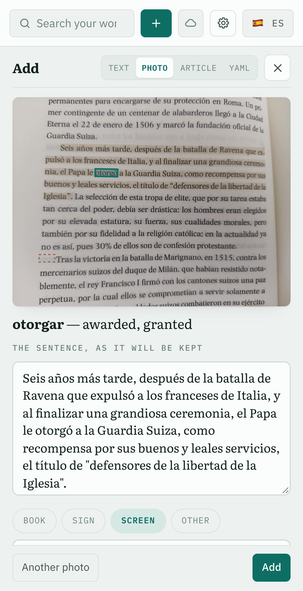
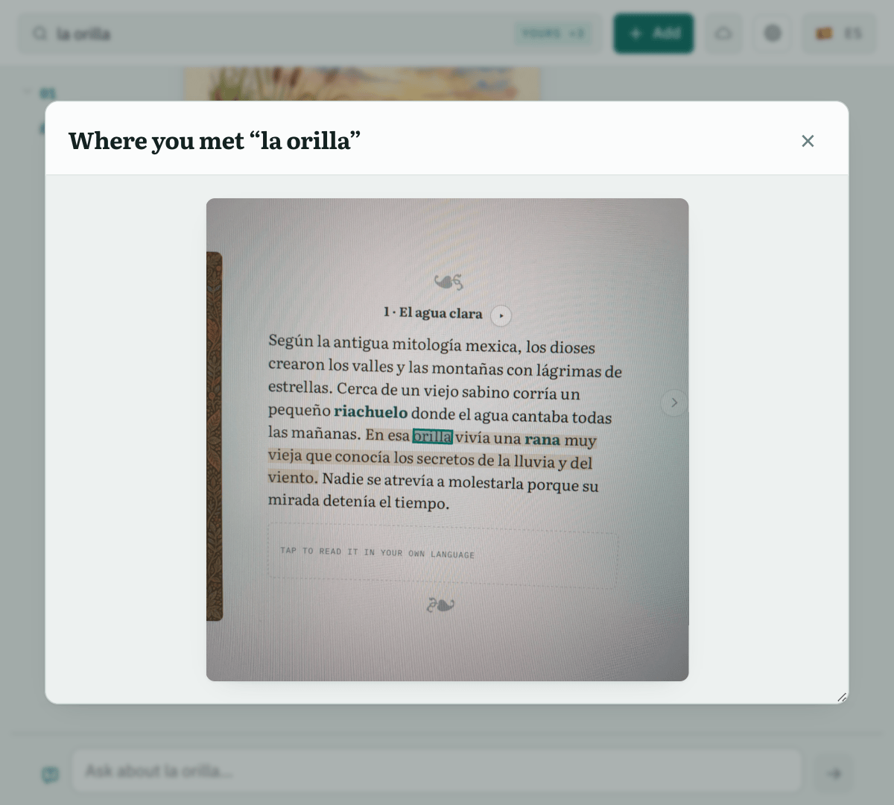

How it works
The photo stays with the word
1Take a photo of the page, a sign or a screen.
2Every word becomes tappable. The page is read by an OCR engine that returns each word with its outline, so a tap is enough to say which word you mean.
3Tap any word. Its sentence is found and highlighted on the photo.
4The meaning in that sentence appears in about a second. Add keeps the word, the sentence and the photo; or just read on.

Open it later from the entry and you see where you met the word, with the word marked: one more thing to remember it by.
Each part chosen by experiment
| Part | Tried | Result |
|---|---|---|
| Reading the page | Cloud Vision RapidOCR on the home server | right word under the tap 98%, tappable in 1.6–1.9 s 80% (68% on book photos), 7.5 s |
| Finding the sentence | SaT, a segmentation model punctuation rules | whole sentence right 98% 69–74%: OCR text has headings and no full stops |
| Meaning of the tap | a fast language model a more accurate one | 1.0 s, right word or phrase 85% exactly, 98% nearly 4.4 s, too slow for a tap |
Thresholds were set before measuring. 13 photos and screenshots of Spanish text, 59 taps checked by hand.
experiments/photo-capture